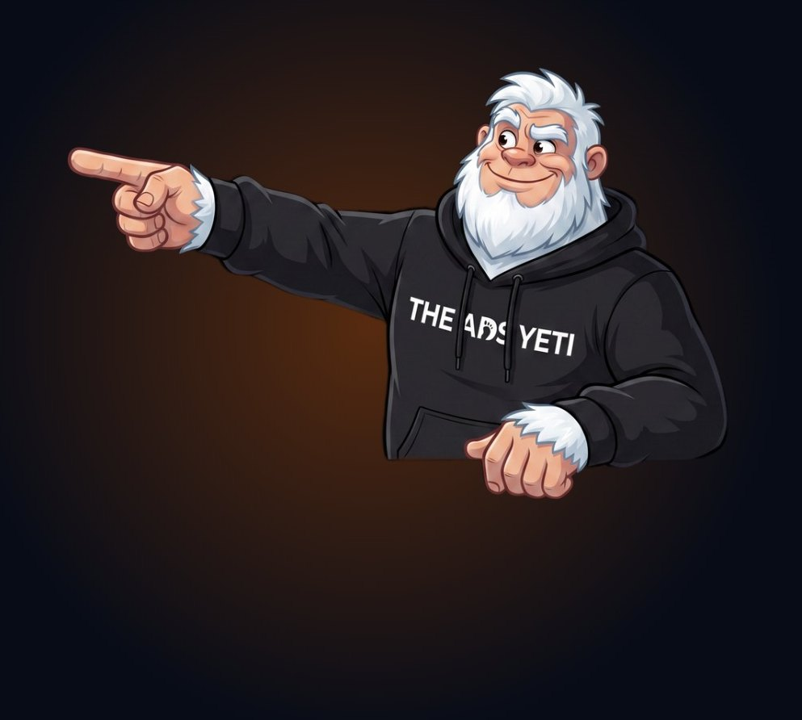

// The Ads Yeti · A founder's case study
The Meta Growth Gap.
Your Meta ads are working. But are they working hard enough? Ten years of spending my own money on Meta at EverTrek, and the places revenue quietly leaks out of accounts that look like they're performing.
Andy Moore · Founder, EverTrek & Head Ads Yeti
// Before you read on
This was written for a fairly specific person.
You're already spending properly on Meta. Probably £10k a month or more, possibly a lot more. Meta isn't an experiment in your business any more. It's a line in the budget that somebody senior has to defend every quarter.
If that's you, I'd guess some of the following sounds familiar:
- Platform ROAS looks fine. Revenue growth doesn't quite match it.
- You've increased spend, and the extra money hasn't come back in proportion.
- Meta, GA4 and your CRM tell three different stories, and at some point you stopped trying to make them agree.
- Your agency or in-house team are good. You're just not sure anyone is really pushing any more.
- Plenty of new ads go live every month. Not many new ideas do.
- Someone has suggested "just increase the budget", and nobody could tell you exactly what the extra spend would buy.
- You have a nagging feeling that part of the problem isn't in Ads Manager at all.
If three or more of those landed, this is for you. Keep going.
Who it isn't for
If you're about to run your first Facebook ad, or you're after a list of bidding hacks and audience tricks, this isn't it, and I'd rather be honest about that now than waste twenty minutes of your evening. There are no campaign structures or optimisation recipes in here.
What's in here is a story, ten years of it, from the founder's side of the spreadsheet. And alongside it, the seven places I see revenue leaking out of established Meta accounts, how to tell whether it's happening in yours, and the questions worth asking before you spend another pound.
// A note from Andy
The first Meta account I ever ran was spending my own money.
Most marketing guides are written by people who've managed somebody else's budget. There's nothing wrong with that. Some of them are very good at it. But this one's a bit different, because for most of the last ten years, the money going into Meta was mine.
When I started EverTrek in 2016, I didn't have a marketing team. I was the marketing team. I built the website, wrote the emails, made the ads, ran the campaigns, built the sales funnels and then sat there wondering where the bloody bookings were.
EverTrek has since grown from a kitchen-table startup into a £3m+ adventure travel business, taking people to Everest Base Camp, Kilimanjaro, Machu Picchu and a lot of other places that involve walking uphill for a fortnight and calling it a holiday. Meta has been part of that the whole way through. Sometimes brilliantly. Sometimes expensively. Occasionally both in the same week.
And because it was my money, I developed a slightly awkward habit. Whenever the dashboard told me something was working, I'd ask the next question. Brilliant, lots of leads. How many of them booked? And if they didn't, where did we lose them?
That habit eventually turned into The Ads Yeti. Other founders started asking us to look at their accounts, and I noticed something that genuinely surprised me. Businesses several times our size, with agencies, in-house teams and far bigger budgets, had exactly the same leaks we'd had. They were just more expensive.
At £10k a month, a 20% leak costs you £24k a year. At £50k a month, it's £120k. Nobody sends you an invoice for it.
How to read this
Part one is the EverTrek story, told through what we learned about Meta along the way. It's honest, so it includes the bits that went wrong.
Part two is the Meta Growth Gap: seven places revenue leaks out of established accounts, even when the campaigns look like they're performing. For each one I'll show you where it showed up at EverTrek, what it looks like at your scale, the warning signs, and the one question I'd want answered.
Part three is for whoever signs off the budget. The maths of spending more versus getting more, a self-audit, and what I'd look at first if your account were my money.
One more thing, in the interest of honesty. I'm going to tell you what we see and why it matters. I'm deliberately not going to give you a step-by-step fix for each leak. Partly because the right fix depends entirely on your account and getting it wrong is expensive. And partly because, if I'm honest, that's the bit we do for a living. 😜
AndyFounder, EverTrek · Head Ads Yeti
// Inside
Contents
- Part one · The founder's side of the spreadsheet
- 01I was the marketing team2016, 14p leads
- 02Meta finds people. It doesn't book them.Leads, guides and follow-up
- 03"Are we live?"Founder-led creative
- 04The bit between booking and goingCustomer value
- 05When the product disappearedMarch 2020
- 06Turning the dial£4k to £14k a month
- 07The £18,000 leadA journey no report saw
- 08Why The Ads Yeti existsSame leaks, bigger bills
- Part two · The Meta Growth Gap
- Leak 1Media efficiencyPaying for sales you'd get anyway
- Leak 2CreativeNew ads, no new ideas
- Leak 3OfferAsking Meta to fix the proposition
- Leak 4Landing experiencePaying twice for the same click
- Leak 5Lead qualityCheap isn't the same as valuable
- Leak 6Follow-up & salesThe gap nobody owns
- Leak 7MeasurementFour versions of the truth
- Part three · For whoever signs off the budget
- 09Spend more, or get more?The maths
- 10Meta performance isn't just a Meta problemThe whole route
- 11The self-auditTwelve questions
- 12If this were my moneyWhere I'd look first
// Part one
The founder's side of the spreadsheet.
How EverTrek learned to make Meta pay, one slightly expensive lesson at a time.
// Chapter 01 · 2016
01
I was the marketing team.
Leads cost 14p. Lookalikes were witchcraft. And the dashboard was full of good news that the bank account didn't always agree with.
2016 was a wonderful time to learn Facebook advertising, mainly because it was very easy to convince yourself you were a genius.
Facebook leads cost about 14p. A 1% Lookalike Audience felt like actual witchcraft. And we all thought Messenger bots were about to replace email. (OK, I did. A little.) What a time to be alive.
I was doing all of it myself. Building the website, writing the emails, making the ads, running the campaigns, setting up the funnels. There was no marketing department to hand anything to, no agency, no analyst. Just me, a laptop and a growing suspicion that I'd started a trekking company and accidentally become a marketer.
The ads worked, in the sense that Ads Manager was full of lovely numbers. CTR up. CPC down. Leads coming in. Engagement flying. If you'd judged EverTrek's marketing purely on what Facebook told me, it was going brilliantly.
But it was my money. And when it's your money, you're not really interested in CTR. You want to know what came out the other side.
The dashboard is full of good news. The bank account is where you find out whether it's true.
A trek isn't an impulse purchase
Part of what made this tricky is what we sell. A trek to Everest Base Camp costs thousands of pounds. It needs months of training, usually time off work, and it comes with a fair amount of fear attached. Am I fit enough? Will I cope with the altitude? Is it safe? Who am I going to be sharing a tent with?
Nobody books that from a single Reel on a Tuesday night. They see something, think "I'd bloody love to do that", and then spend weeks or months talking themselves into it (or out of it). They ask a friend. They Google us. They read reviews. They look at their bank balance. They forget about us. They come back.
So from very early on, it was obvious that Meta was never going to be the whole sale. Its job was to start something. The question that's followed me ever since is how you tell whether it did.
The question that shaped everything after it
Not "what did Facebook say worked?" but "what actually made someone book a trip?"
It sounds obvious written down. In practice, almost every report I've ever been sent, by platforms, by tools, and later by agencies, answers the first question and quietly hopes you won't ask the second.
What this looks like at £10k+ a month
The 14p days are gone. The trap isn't.
At scale it just looks more sophisticated. A healthy platform ROAS. A cost per lead that's on target. A weekly report full of green arrows. The question underneath is exactly the one I was asking in 2016: how much of that turned into revenue that wouldn't have happened anyway?
// Andy to addYour first proper Meta win and your first proper Meta disaster, 2016–17. Roughly what you were spending, what the ad was offering, and the moment you realised a lead and a booking were two very different things.
// Chapter 02 · The lead isn't the sale
02
Meta finds people. It doesn't book them.
Why we stopped asking strangers to buy a trek, and started obsessing over everything that happened after the form.
Asking a stranger on Facebook to hand over thousands of pounds for a trek is a big ask. So we stopped asking.
Instead, we asked for something much smaller. Download a guide. Get the information. Find out what's actually involved in getting to Base Camp. It's a small, useful first yes, and it gave Meta a much easier job: find people who are genuinely curious, and get them to put their hand up.
That bit worked. It still works. But it moved the problem rather than solving it. Because now we had leads, lots of them, and a lead is not a booking. A lead is the start of a conversation. Sometimes a very long one.
Following the lead home
This is where I think EverTrek's marketing really started to grow up. We stopped thinking about Meta as a thing that produced leads, and started thinking about the whole route a person took:
Ad→Lead→Qualified lead→Conversation→Customer→Revenue
And once you look at it that way, you notice that most of the money is made or lost in the bits after Meta. What did they get after they downloaded the guide? Did anyone speak to them? How quickly? Did they come back? Did anything tell us when they did?
When the numbers weren't working, I didn't really care which department owned the problem. I just wanted to find it. Sometimes it was the ads. Quite often, I found, it wasn't.
If we're generating loads of cheap leads and nobody buys, that's not success. It's just a cheaper way of not selling anything.
Guide first, transaction second
There's another side to this that took me longer to appreciate. We repeatedly advised people based on what was right for them rather than what created the quickest sale. We'd tell someone to train for longer before committing. We once told a parent, kindly, that their 12-year-old probably wasn't ready for a major trek yet. Some of those people came back years later, when the timing was right, and booked.
Brilliant for the brand. Terrible for a 30-day attribution window. Because if you'd judged those leads after a month, every one of them would have looked like a failure. "Didn't convert. Bad lead. Move on."
Except they weren't bad leads. They were good leads that weren't ready yet. And I've become slightly obsessed with the difference.
What this looks like at £10k+ a month
The handover is where the money goes missing.
In bigger businesses, the route from ad to revenue usually crosses at least two teams and three systems. The agency reports on leads. Sales reports on deals. The CRM sits in the middle. The gap between them often belongs to nobody, and it's very often where the biggest leak in the whole account is hiding.
// Andy to addWhen EverTrek first had someone properly following up Meta leads (calls, WhatsApp), and what changed in the booking rate when they did. Rough numbers are fine: lead-to-booking %, how quickly leads were contacted before and after.
// Chapter 03 · Founder-led creative
03
"Are we live?"
The creative that did the most for EverTrek didn't look much like an ad. It looked like Dave's haircut and a pair of Meindl Bhutans.
Alongside the ads, we just kept turning up. And I've only recently realised how much of the heavy lifting that did.
Regular Facebook Lives. Tuesday Tune-Ins. Q&As. Podcasts. Videos from Nepal. A community group where people asked questions and, increasingly, answered each other's. Over time, customers started calling themselves EverTrekkers.
None of it was particularly polished. If you watched enough of our Lives you'll have heard "Are we live...?" more times than any human reasonably should. You'll have seen the tech gremlins make regular appearances. You'll have learned that, whatever the kit question, there was a surprisingly good chance the answer was "Meindl Bhutan". And you'll have witnessed some of Dave's more questionable haircut choices over the years.
Somehow, one of those Lives ended up with 27,000 people watching it. I'm still not entirely convinced they all meant to be there.
Familiar beats polished
Here's why it mattered commercially. By the time someone was actually ready to book, we weren't just another trekking company they'd found on Google. We were those slightly strange people they'd been watching on Facebook for the last six months.
And when you're asking someone to hand over thousands of pounds and trust you to get them safely halfway round the world and up a bloody great mountain, that matters a lot.
Little rituals grew out of it that nobody planned. The Yeti Pose. EverTrek neck buffs turning up in photos all over the world (some of them in places a neck buff was never designed to cover). People commenting "bingo" when Andy and Dave said one of their usual phrases. Customers stopped just consuming the content and started joining in.
"Just showing up, having a chat and trying to be useful. Turns out that might have been marketing too."
What it did for the ads
This is the bit that's easy to miss if you think of "brand" and "performance" as separate budgets. The founder-led content gave our Meta ads something no competitor could copy. Real people, answering real worries, in a voice people already recognised.
It also taught me that creative has more than one job. Most ads only ever try to do the first:
Job 1InspirationMake the outcome, and the person they'll become, feel real.
Job 2ReassuranceAnswer the scary questions early: fitness, safety, cost.
Job 3ProofLet real customers make the risk feel survivable.
Job 4ContinuityCarry the same story into search, pages and sales.
A personalised video from a real person could set us apart from the four or five other companies someone was considering. Not because it was clever, but because it was human, and none of the others bothered.
What this looks like at £10k+ a month
You don't need a founder on Facebook Live every Tuesday.
But you do need something only you can say. The problem in most mature accounts isn't a lack of ads. It's a lack of new reasons to buy. Lots of fresh edits, hooks and formats, all saying the same thing they said last year.
// Andy to addTwo or three real EverTrek ads or concepts that were big winners over the years: the hook, the format, and roughly what happened. And one that you were sure would fly and absolutely didn't.
// Chapter 04 · Customer value
04
The bit between booking and going.
Why the months after someone pays aren't dead time, and what an 80-page Trip Planner has to do with your cost per acquisition.
In the early years, there wasn't much between someone paying their deposit and turning up at the airport. Then the feedback started telling us that was a problem.
Around 2018, feedback from an Everest Base Camp group told us people didn't feel prepared enough before they left. One customer mentioned a detailed physical binder she'd once had from another travel company.
We could have got defensive. Instead we built a personalised Trip Planner. It ended up being about 80 pages long, with the customer's name on it, fitness plans, maps and practical advice. People carried it with them, scribbled notes in it, photographed it and shared it online.
Over time we filled the rest of that gap too. Preparation emails, personalised videos, an app with maps and countdowns, Ask a Yeti, timed notifications, arrival messages, a members' area, training content, Tuesday Tune-In, podcasts. None of it came from a master plan. Together it became the glue between EverTrek and the customer.
The space between purchase and delivery isn't dead time. It's where the relationship actually gets built.
Why a Meta person should care
Because the first booking isn't the whole value of a customer, and most ad accounts are optimised as if it is.
A customer who feels looked after comes back. They tell their friends. They post the photo with the buff. They leave the review that makes the next stranger's decision easier. They turn up in the comments of your ads answering other people's questions for you. Every one of those things makes your next customer cheaper to acquire, and almost none of them appear in the ad account.
So if you're judging Meta on first-purchase value alone, there's a good chance you're undervaluing the campaigns that bring in your best customers, and overvaluing the ones that bring in your cheapest.
What this looks like at £10k+ a month
Not all customers are worth the same, but your ad account thinks they are.
Most accounts optimise towards the first conversion. Fewer know which campaigns produce customers who come back, spend more, or refer others. If you can't tell your highest-value customers from your cheapest ones, neither can Meta.
// Andy to addEverTrek's repeat-customer rate and how much business comes from referrals or returning EverTrekkers, even roughly. A real example of one customer who's booked several trips would bring this to life.
// Chapter 05 · March 2020
05
When the product disappeared.
85 customers were due to fly to Nepal the next day. Then the world shut. What happens to a brand, and an ad account, when you've got nothing to sell?
I was on a ski trip in Morzine when it became real. I'd just come off a brilliant day on the slopes, and by the evening the mood had completely changed.
Around 85 EverTrek customers were due to fly to Nepal the following day. The team headed into the office to start calling them. Around 14 had already travelled and ended up stuck in Nepal, and we had to work with embassies on charter arrangements to get them home.
I'll be honest, I had a proper wobble. The fear wasn't really about ads or marketing. It was much simpler: if everyone wanted their money back, would EverTrek still exist? I left the trip early and flew home the next day.
We couldn't promise a date. Only how we'd behave.
Once we got past the initial panic, the question changed. Rather than "how do we protect the business?", it became "what's the simplest, fairest thing for the customer?"
We stripped out cancellation and deferral fees and made it easy to keep your trip and travel whenever it became possible again. Within the first week, we started live Q&As on Facebook. No formal updates from a faceless company. Just us, stuck at home like everyone else, answering what we could and being honest about what we didn't know.
For roughly 20 months we couldn't take anyone trekking. And more than 95% of the customers offered that route stayed with us.
Due to fly85
customers heading to Nepal the next day
No trips~20 mo
without being able to operate normally
Stayed95%+
of customers offered a postponement
COVID didn't create the loyalty. It revealed it.
What this taught me about ad accounts
For years, the Lives and the community and the Trip Planner had sat firmly in the "nice to have" column. None of it had a ROAS. None of it showed up in a weekly performance report.
And then, when the product disappeared entirely, it turned out to be the thing holding the business up.
You can't manufacture loyalty during a crisis. You can only make withdrawals from trust you've already deposited. And I think the same is true, in a much less dramatic way, of every ad account. The accounts that scale well are rarely the ones with the cleverest campaign structure. They're the ones where the brand has already done enough work that Meta is introducing people to something they're quite happy to trust.
What this looks like at £10k+ a month
Brand and performance aren't two different budgets. They're one system.
When a business cuts the stuff that "doesn't have a ROAS", it usually doesn't notice straight away. It notices six months later, when acquisition costs creep up and nobody can quite say why.
// Andy to addWhat happened to EverTrek's Meta spend during COVID (paused completely? kept community content running?), and what happened when you switched ads back on in 2021–22. Did the warmed-up audience make the restart cheaper? This is a big gap in the story and a strong one for this audience.
// Andy to add · bridging chapterThe post-COVID surge and the years in between (roughly 2021–2024): the rush of rebookings, iOS 14 and Meta's tracking changes, rising costs, hiring, any investment, and the moment things that used to work stopped working. This could become its own chapter, "The rules changed", and it's the period most £10k+ advertisers will recognise.
// Chapter 06 · Scaling
06
Turning the dial.
We tripled Meta spend in six months. Cost per lead didn't move. And the most interesting result didn't show up in Meta at all.
Between June and November, we took EverTrek's monthly Meta spend from £4k to £14k. That's usually the point where costs start running away from you. They didn't.
Monthly Meta spend£4k→£14k
June to November
Paid social leads3,500+
a month, up from 800–1,000
Cost per lead£4→£4
held flat while spend tripled
I'd love to tell you that was down to a brilliant campaign structure. I think it had a lot more to do with everything in the previous five chapters. Years of trust deposits change what scaling feels like. Meta was introducing people to a brand that a lot of them had already half-heard of, from a friend, a Live, a photo with a buff in it.
The bit that didn't stay inside Meta
Here's what really got my attention. As Meta spend climbed, our organic and paid search climbed with it. Search volume, leads and conversions were all up.
Which created a slightly ridiculous situation. Meta said it did it. Google said it did it. GA4 had another idea entirely. Meanwhile I'm sat there as the business owner thinking: I don't really care who gets the trophy. I just want to know what actually helped us sell the trip.
Meta captured the interest. Search converted the intent. And each of them, quite reasonably, claimed the sale.
Why this matters if you're spending £10k+
Imagine you'd looked at that period through a typical channel report. Google's cost per acquisition looks lovely. Meta's looks expensive, because a lot of the people it introduced to EverTrek came back later through a Google search. Someone in a budget meeting quite reasonably says, "Why don't we move some of the Meta money into Google?"
And if you did, I think you'd slowly starve the very thing that was feeding Google in the first place. Not straight away. Four to eight weeks later, when branded search softens and nobody connects it to the budget decision.
This is one example, and I'm careful not to build a theory on one account. Which is exactly why we went and looked at 55 more. More on that in chapter 08.
// Andy to addWhich year the June–November scale-up was, and what bookings and revenue did over the same period (not just leads). For a £30m reader, revenue and blended acquisition cost are the numbers that will make this land.
// Chapter 07 · Attribution
07
The £18,000 lead.
A Facebook lead that any 30-day report would have written off, and what happened next.
This was a cool little customer journey I spotted recently, and it's become my favourite way of explaining why I don't trust short reporting windows.
Not long ago, someone downloaded one of our guides from a Facebook ad. Then nothing. They didn't book. They didn't speak to sales. They didn't suddenly hand over thousands of pounds because Meta had shown them a particularly lovely picture of Everest. They just carried on with their life.
But they stayed in our world. They got our emails. They saw our content. They had a look around now and again.
Months later, they came back and downloaded something else. This time, that second download triggered our sales team. We sent them a WhatsApp. Had a chat. And about a week later, they made nearly £18,000 worth of bookings.
Day 0Facebook adDownloads a guide. Doesn't buy.
Months passStays in our worldEmails, content. Nothing in any report.
The returnDownloads againTriggers the sales team.
The chatA WhatsAppA human conversation.
A week later~£18,000in bookings.
Now, it's one customer journey. I'm not going to build a marketing strategy around one example, and I'm definitely not suggesting Facebook gets to stick £18k in its little attribution column and take the afternoon off.
But I love journeys like this because they show how messy buying really is. If we'd judged that original lead after 30 days, we'd have said exactly what most reports say. Didn't convert. Move on.
There's a big difference between a bad lead and a good lead that isn't ready yet. Most reporting can't tell them apart.
Four things had to go right
Notice how many separate pieces had to work for that £18k to happen. The ad had to find the right person. The guide had to be worth downloading. The emails had to keep us in their life for months without annoying them. And something had to notice when they came back, so a human could have a conversation at exactly the right moment.
Only the first of those lives in Ads Manager. If any of the other three had been broken, Meta would have looked like it failed, and someone would probably have cut the campaign that found the customer.
What this looks like at £10k+ a month
Your best Meta customers might be invisible to your Meta reporting.
The longer and more considered your sale, the more of your real Meta value sits outside the attribution window. Do you know what happens to a Meta lead that isn't ready to buy for six months?
// Chapter 08 · Same leaks, bigger bills
08
Why The Ads Yeti exists.
I never intended to start an agency. Which is probably part of the reason I ended up starting one.
Most of what I know about paid social didn't come from running campaigns for clients. It came from needing the campaigns to work in my own business.
After a few years of other founders asking "how are you doing that?", I started helping a handful of them. Then a few more. And somewhere amongst all of that, The Ads Yeti appeared.
Today we work with businesses like Bon Voyage and Absolute Escapes in travel, and Tŷ Hafan outside it. Between EverTrek and Bon Voyage alone, the work has generated hundreds of thousands of pounds in bookings and leads. But the thing I find most useful isn't the results. It's what I keep seeing when I open up an account for the first time.
Same problems, bigger numbers
I expected bigger businesses to have this stuff sorted. More budget, more people, proper agencies. Some of them do. But a lot of them have exactly the same leaks EverTrek had in its scrappier years. They're just better hidden, and considerably more expensive.
The campaigns are usually fine. Sometimes they're very good. The problem is almost always somewhere in the system around them: the creative has stopped producing new ideas, the offer is asking too much, the follow-up is slow, the measurement is quietly sending budget to the wrong places.
So we went and looked properly
After the EverTrek scale-up, I wanted to know whether what we'd seen between Meta and Search was a fluke. So we analysed weekly Meta and Google Ads data from 55 UK ecommerce and retail brands across travel, retail, fashion, home, fitness and services. Three patterns kept showing up:
Demand generator73%
of accounts: more Meta spend moved with more branded search, PPC clicks and conversions.
Efficiency multiplier~30%
of accounts: more Meta spend moved with better PPC conversion rates and ROAS.
Delayed response~25%
of accounts: PPC efficiency dipped first, then improved three to four weeks later.
Correlation isn't causation, and I'm careful to say so. But when a pattern repeats across 55 accounts and matches independent holdout testing (Meta's own studies with Brainlabs found audiences who saw Meta ads went on to make 19% more search visits than a matched group who didn't), it's earned the right to be taken seriously.
The job isn't to make one platform look good. It's to find out what's actually driving growth. That's the bit I love.
Everything I've learned, at EverTrek and since, boils down to seven places where revenue leaks out of Meta accounts that look like they're working. That's part two.
// Andy to addWhen The Ads Yeti officially launched, and one client story (with their permission): what you found in the first few weeks of looking at their account and what changed. Bon Voyage or Absolute Escapes with a real before-and-after would be the strongest proof in the whole book for this audience.
// Part two
The Meta Growth Gap.
Seven places revenue leaks out of established Meta accounts, even when the campaigns look like they're performing.
// How to read the leaks
Your Meta ads might be working. The question is whether they're working hard enough.
I want to be clear about something before we start. This isn't a list of things your agency is doing wrong.
Most of the accounts we look at are being run competently. The campaigns are live, the reports go out, the numbers are broadly where someone said they'd be. That's exactly why these leaks survive. Nothing's on fire. Nobody's looking for them.
Every one of the seven below showed up at EverTrek at some point, usually when I thought things were going nicely. For each one, I'll show you:
What we seeHow the leak usually shows up in an established account.
Why it matters commerciallyWhat it's actually costing, in money rather than metrics.
Warning signsHow you'd spot it from where you sit, without opening Ads Manager.
And then one question. Not a fix. A question you can put to your team, your agency or yourself, that should be easy to answer confidently if everything's fine.
What a leak actually costs
It's worth doing the maths once, because a "small" inefficiency stops being small surprisingly quickly at this level of spend.
| Monthly Meta spend | Annual spend | 10% leak | 20% leak |
|---|
| £10,000 | £120,000 | £12,000 | £24,000 |
| £30,000 | £360,000 | £36,000 | £72,000 |
| £50,000 | £600,000 | £60,000 | £120,000 |
| £100,000 | £1,200,000 | £120,000 | £240,000 |
That's media spend doing nothing useful, every year, before you count the revenue it should have produced. And in my experience, most accounts don't have one leak. They have a bit of all seven.
1// Leak 1 of 7 · Media efficiency
Paying for sales you'd have got anyway.
Budget follows whatever the platform reports most favourably, which isn't always where new revenue comes from.
Where it showed up at EverTrek
In the early days, I'd move money towards whatever looked cheapest. Retargeting always looked brilliant. Of course it did. It was full of people who'd already downloaded a guide, watched a Live and were halfway to booking. Meanwhile the campaigns finding brand new people looked expensive, because they were doing the hard bit.
It took me longer than I'd like to admit to realise that the cheap-looking campaigns were often taking credit for customers the expensive-looking ones had found.
What we seeA growing share of spend going to audiences who already know the brand: retargeting, existing customers, people who were going to buy anyway. Prospecting gets trimmed in soft months because it's "the weakest line on the sheet". Platform ROAS stays healthy throughout.
Why it matters commerciallyYou can have a great ROAS and be mostly paying to be present at sales you'd have made anyway. Meanwhile the activity creating next quarter's customers is quietly starved, and the bill for that arrives months later as rising acquisition costs nobody can explain.
Warning signs- ROAS stable or rising while new-customer numbers flatten or fall.
- Any attempt to scale spend quickly seems to "break" performance.
- Branded search softens a month or two after prospecting is cut.
The question to ask
If Meta disappeared tomorrow, how much of the revenue it currently claims would actually disappear?
2// Leak 2 of 7 · Creative
Lots of new ads. Not many new ideas.
Creative volume goes up, performance doesn't, and the usual response is to make more of the same.
Where it showed up at EverTrek
Our best creative was often a person, not a production. A Live, a real customer, a slightly wonky video from Nepal. But there were definitely stretches where we were making plenty of new ads that were really the same ad in a different outfit. New edit, new music, new first three seconds. Same reason to book.
The results told us exactly what was going on. Nothing much changed.
What we seeMature accounts producing plenty of "new" creative without testing many new ideas. Different hooks, edits and formats give the appearance of testing while the underlying proposition hasn't changed in a year. Usually three or four old concepts are still carrying most of the spend.
Why it matters commerciallyMeta's delivery leans heavily on creative to find the right people. When the ideas run out, the account plateaus, costs creep up and scaling gets harder. The team stays busy and the spend keeps going, but the growth has quietly stopped.
Warning signs- Creative output is up, but cost per acquisition isn't improving.
- Your top-performing ads are many months old.
- Creative reviews talk about formats and hooks, rarely about why people buy.
The question to ask
How many genuinely different reasons to buy did your business test on Meta last quarter?
3// Leak 3 of 7 · Offer
Asking Meta to fix the proposition.
No amount of targeting rescues a first step that's too big, too vague or not compelling enough.
Where it showed up at EverTrek
Asking a stranger to book a trek straight from an ad was asking Meta to do something it was never going to do well. The leap was too big. Changing what we asked for, a guide rather than a booking, did more for our results than any targeting change I ever made.
And during COVID, the most important "offer" decision we ever made had nothing to do with price. It was making it simple and fair to stay. More than 95% did.
What we seeMeta being blamed for problems that are really about the proposition. The offer hasn't changed in years, the first step is too big for a cold audience, or discounting has become the only lever that reliably moves anything.
Why it matters commerciallyWhen the reason to act now is weak, you pay more per result to push people over the line, or you train your market to wait for a sale. Both quietly erode margin, and neither shows up as an "offer problem" in an ad report.
Warning signs- Strong engagement and click-through, disappointing conversion.
- Promotions work; nothing else does.
- Competitors with similar products seem to convert cold traffic more easily.
The question to ask
If your ideal customer saw your ad cold, what would make them act this week rather than "one day"?
4// Leak 4 of 7 · Landing experience
Paying twice for the same click.
Paid traffic lost between the ad and the conversion, while Meta takes the blame.
Where it showed up at EverTrek
People arrive from a trekking ad with a dream and about fifteen worries. Am I fit enough? What's the altitude like? What if I need to pull out? If the page they land on only talks about the dream, the worries win.
The questions people asked in the comments of our ads and in our Lives were, more or less, a free list of everything our pages needed to answer.
What we seeThe ad promises one thing and the page talks about another. Pages built for people who already know the brand, not for someone meeting it for the first time. Mobile experiences nobody senior has looked at on an actual phone for months.
Why it matters commerciallyEvery visitor lost after the click is media you paid for and got nothing back from. It shows up in the ad report as a rising cost per acquisition, so the usual reaction is to fiddle with the ads, which doesn't fix a page problem.
Warning signs- Click-through is healthy but conversion rate is drifting down.
- Big differences in conversion rate between traffic sources.
- Nobody can tell you when the landing page was last properly tested.
The question to ask
What's your conversion rate from Meta traffic specifically, and what was the last thing that changed it?
5// Leak 5 of 7 · Lead quality
Cheap isn't the same as valuable.
The algorithm finds you exactly what you ask for. That's the problem.
Where it showed up at EverTrek
When we scaled to 3,500+ leads a month at £4 each, the number I cared about wasn't the £4. It was how many of those people were genuinely the kind of person who'd end up on a mountain with us. A flat cost per lead is lovely. A flat cost per lead full of the wrong people is just a faster way of keeping the sales team busy.
What we seeMeta optimising towards the cheapest conversion it can find, because that's what it's been told success looks like. Lead volume up, cost per lead on target, and the sales team grumbling that the leads "aren't what they used to be".
Why it matters commerciallyCheap leads that waste sales time aren't cheap. Worse, Meta learns from what you tell it counts as a win. If the signal going back is "any lead", it gets very good at finding any lead, and steadily worse at finding customers.
Warning signs- Cost per lead improving while lead-to-sale rate drifts down.
- Marketing and sales disagree about whether leads are good.
- Nothing about what happens in sales ever goes back into the ad account.
The question to ask
What percentage of the leads Meta generates would your sales team describe as genuinely good leads?
6// Leak 6 of 7 · Follow-up & sales conversion
The gap nobody owns.
Meta creates the demand. Then the CRM, the nurture and the sales process fail to turn enough of it into money.
Where it showed up at EverTrek
The £18,000 lead in chapter 07 only happened because something noticed when that person came back, and a human sent a WhatsApp at the right moment. I can't help wondering how many similar people, over the years, came back quietly and nobody noticed.
What we seeSlow follow-up. Generic email sequences that end after a fortnight. No trigger when an old lead re-engages. Leads who aren't ready now treated as dead rather than early. Marketing and sales each reporting their own numbers, with nobody accountable for the handover.
Why it matters commerciallyThis is very often the biggest leak in the account, and the least likely to be spotted, because it isn't in anybody's ad report. The agency reports leads. Sales reports deals. The money lost in between belongs to no one, so no one goes looking for it.
Warning signs- You can't say how quickly a new Meta lead is contacted.
- Leads older than a month or two are never revisited.
- Meta gets blamed for "poor lead quality" without anyone checking the follow-up.
The question to ask
What happens to a Meta lead that isn't ready to buy for six months?
7// Leak 7 of 7 · Measurement
Four versions of the truth.
Meta, GA4, the CRM and the bank all tell different stories, and budget follows whichever one is loudest that week.
Where it showed up at EverTrek
When we tripled Meta spend, search climbed with it. Meta claimed the sales. Google claimed the sales. GA4 had another idea entirely. If we'd judged that period on any one of them, we'd have made a confidently wrong decision about where the next pound should go.
What we seeEach channel judged on its own platform's numbers, inside its own window. Seven-day views deciding the fate of activity built to influence three-month decisions. Budget moved because one channel "looks cheaper", with no agreed view of what success means before a test begins.
Why it matters commerciallyMeasurement decides where every future pound goes. If it's wrong, every decision downstream is wrong too, and made with total confidence. This is how sensible people end up optimising away their own future demand.
Warning signs- Nobody can reconcile Meta-reported revenue with actual revenue.
- Tests are judged on whatever window the platform defaults to.
- Budget decisions are made channel by channel rather than on the business result.
The question to ask
If you increased Meta spend by 30% tomorrow, what evidence tells you the extra spend would stay profitable?
// Which one is it?
Spotting a leak is the easy bit.
If you've read all seven and recognised a few, you're in very good company. Almost every account we open has a bit of each.
The hard part, and the bit that actually makes money, is working out which one is the constraint. The one that, if you fixed it, would let everything else work harder. Because fixing the wrong one first is how businesses spend six months being very busy and slightly disappointed.
Improve the creative while the follow-up is broken, and you'll generate more leads that don't convert. Fix the landing page while the measurement is wrong, and you may not even be able to tell it worked. Scale spend while the offer is weak, and you'll just pay more to be ignored by more people.
How we approach it
We look at five layers: media, creative, offer, conversion and commercial performance.
Not to produce a list of everything that could be better (there's always a list). To find the one constraint that's actually limiting growth right now, and what's likely to happen when you remove it.
// Part three
For whoever signs off the budget.
The maths of spending more versus getting more, the whole route your customer takes, a self-audit, and where I'd look first if this were my money.
// Chapter 09
Spend more, or get more from what you already spend?
When Meta growth stalls, the most common suggestion in the room is to increase the budget. Sometimes that's exactly right. But it's rarely the first question I'd ask.
At EverTrek, the most valuable improvements we ever made weren't budget increases. They were changes that made the money we were already spending produce more: a better first step, a faster follow-up, creative that answered the real worries, measurement that stopped us cutting the wrong thing.
Good ROAS can hide a lot
Platform ROAS is a useful number. It's just not the number your board cares about. I find it helps to look at Meta through a longer chain:
Spend→Qualified demand→New customers→Revenue→Gross profit→Incremental growth
A healthy ROAS can sit happily alongside flat new-customer numbers, shrinking margin and a business that isn't actually growing. If you only look at the first link in the chain, you'll never see it.
The maths
Here's the comparison I'd want in front of me before approving a budget increase. If the same media spend produced more commercial output, how much extra budget would you have needed to buy that result instead?
| Monthly Meta spend | Annual spend | +10% output | +20% output | +30% output |
|---|
| £10,000 | £120,000 | £12,000 | £24,000 | £36,000 |
| £30,000 | £360,000 | £36,000 | £72,000 | £108,000 |
| £50,000 | £600,000 | £60,000 | £120,000 | £180,000 |
| £100,000 | £1,200,000 | £120,000 | £240,000 | £360,000 |
Equivalent media value: the extra annual budget you'd otherwise need to spend for the same result, assuming returns held steady (they usually don't, which makes the case stronger). Illustrative only. I'm not promising anyone 30%.
The point isn't the exact percentage. It's that the output of what you already spend is usually a bigger, cheaper and less risky lever than the next budget increase. And it's the one boards ask about least.
Meta isn't expensive. Inefficient Meta is.
// Chapter 10
Meta performance isn't just a Meta problem.
This is probably the single biggest thing ten years at EverTrek taught me. The campaigns are one box in a much longer route, and optimising only that box puts a ceiling on everything.
Market→Message→Creative→Meta→Landing page→Lead→Nurture→Sales→Customer→Measurement→back into Meta
Look at where the seven leaks sit on that route. Only one of them, media efficiency, lives entirely inside Ads Manager. The other six are spread across creative, offer, website, CRM, sales and reporting. Which is why an account can be "well managed" by every platform metric and still leave a lot of revenue on the table.
It's also why I think a lot of the frustration with Meta is misplaced. The ads get blamed because they're the most visible line of spend. The leak is often three steps further down the route, in a part of the business the ad team can't see and wasn't asked to look at.
Customers don't live inside Ads Manager
They see something. Leave. Google you. Read reviews. Forget about you. See you again. Come back. Eventually buy. Yet we still put each channel in its own little box and ask which one "won".
The research backs this up, and it's not just ours:
- Analytic Partners (ROI Genome, 750+ brands): around 30% of paid search performance is driven by brand and upper-funnel activity elsewhere.
- Brainlabs with Meta (17 incrementality studies, 12 advertisers): people who saw Meta ads made 19% more search visits than a matched group who didn't.
- Expedia Group (70,000+ travellers): a travel booking takes around 45 days and 141 pages of content. Last-click reporting credits exactly one of them.
- Our own 55-account analysis: in 73% of accounts, higher Meta spend moved with higher branded search and conversion volume.
The most expensive sensible decision in marketing
How established brands optimise away next year's customers.
Meta ROAS dips in a soft month. Budget moves to Search, which looks efficient and close to revenue. Four to eight weeks later, branded search softens. Acquisition costs creep up. Someone decides Search has stopped working. It hasn't. Fewer people were being given a reason to search.
Every step makes sense on its own. The damage only shows up in the gap between them, and channel-by-channel reporting is built to hide exactly that gap.
// Chapter 11 · The self-audit
Twelve questions for your next Meta review.
There's no score at the end of this, and no "0–4 means disaster". Just tick the ones you can answer confidently today, with evidence rather than a feeling.
- We can name which campaigns produce our highest-value customers, not just our cheapest conversions.
- We know roughly how much of Meta's claimed revenue would disappear if we switched it off.
- We tested a genuinely new reason to buy on Meta in the last 90 days.
- We know our conversion rate from Meta traffic specifically, and what last changed it.
- We can connect a Meta lead to actual revenue in our CRM.
- We know what percentage of Meta leads our sales team would call genuinely good.
- We know our real average time from first touch to purchase.
- We agree how long to judge a campaign or test before it launches.
- We can see branded search next to Meta spend, week by week.
- What happens in sales feeds back into how Meta is optimised.
- Our agency or team has proposed a meaningful offer or funnel test in the last 90 days.
- If we added 30% to the budget tomorrow, someone could explain what it would buy.
If several of those were hard to answer confidently, that doesn't mean anything's broken. It means you're investing a lot of money in a machine you can't fully see inside. And that's usually where the growth is hiding.
// Chapter 12
If this were my £600k, here's where I'd look first.
Say you're spending £50k a month on Meta. That's £600k a year. If it were EverTrek's money, this is roughly the order I'd want to understand things in, before touching a single campaign.
- Where the money actually goes versus where genuinely new customers come from.
- The creative history: how many real ideas have been tested, rather than how many ads.
- The offer and the first step, seen through the eyes of someone who's never heard of you.
- What happens after the click for Meta traffic specifically.
- Lead quality as sales sees it, not as the ad account reports it.
- What happens to people who aren't ready yet, and whether anything notices when they come back.
- How the four versions of the truth disagree, and which one is actually making the budget decisions.
- The customer economics: margin, repeat purchase and lifetime value by source.
Then, and this is the bit that matters, I'd work out which of those is the constraint. Not the longest list of improvements. The one thing that's holding the rest back.
That's the part that's very hard to do from inside the business. Not because your team isn't capable, but because they're busy running it, and because everyone's been looking at the same dashboards for long enough that the gaps start to look normal.
Nobody buys on a dashboard. People buy after a route of attention, confidence and intent. The job is to find where that route is leaking.
// A second opinion

Let Andy take a look.
You're already spending £10k+ a month on Meta. You don't need another agency telling you to spend more.
We'll take an independent look at your Meta performance, creative, offer, funnel and conversion journey, and show you where we believe revenue is being left on the table. If everything looks great, we'll tell you. If it doesn't, we'll show you where we'd start.
adsyeti.com[ add booking link here ]
// Sources and honest notes
Where the numbers come from.
EverTrek account data. Meta spend, paid social leads and cost per lead, June to November. Search and organic movements are directional.
EverTrek customer records. COVID postponement retention (95%+ of customers offered the option) and the £18k customer journey. One journey is an example, not a trend.
2016 lead costs. Andy's recollection of early EverTrek Facebook campaigns. Approximate, and a very different market to today.
55-account analysis. Weekly Meta and Google Ads data from UK ecommerce and retail brands, anonymised. Correlation, not causation. Full detail in our Connected Demand briefing.
Analytic Partners, ROI Genome (750+ brands, 45 countries). Brainlabs with Meta, incrementality studies (17 studies, 12 advertisers). Expedia Group, Path to Purchase research (70,000+ travellers, seven markets).
Illustrative maths. Tables in chapters 09 and the leak introduction are arithmetic on spend levels, not predicted results.
Correlation shows that two measures moved together over a period. It doesn't isolate creative, offer, seasonality, pricing or competitor effects. Use it to ask sharper questions, not to hand out trophies.